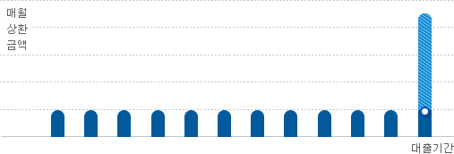

예적금담보대출
-
대출대상자
당행 예적금 가입고객 -
대출한도
가입 예적금 금액의 최대 100% -
대출금리
가입 예적금 금리 + 1.5% -
대출기간
가입 예적금 만기일까지
당행 가입 예적금을 담보로 간편한 대출
낮은 금리로 이자부담을 낮춰주는 대출
-
상품안내
-
상품명
- 예적금담보대출
-
상품특징
- 예적금 가입고객이라면 단 1.5%의 추가 금리 부담으로 신속한 대출가능
-
대출신청대상
- 당행 예적금 가입고객
*입출금자유예금상품(보통예금, 저축예금)은 대출이 불가능합니다
-
대출한도
- 담보 예적금 금액의 90~100%
-
대출기간
- 만기일시상환 : 담보 예적금 만기일까지
-
상환방식 및 이자의 부과시기
- 만기일시상환 : 원금은 만기일에 일시상환하고 이자는 일정기간(월, 만기일시 등) 마다 후취
-
대출금리
- 가입예적금금리 + 1.5%
-
대출이자율
- 고정금리 : 대출실행시 결정한 금리가 약정기간 동안 동일하게 적용
-
준비서류
-대출신청서류
-본인확인서류 : 신분증사본(주민등록증 또는 운전면허증) 1부
-당행 예적금 통장 및 통장도장(날인) 및 기타대출상담시 필요서류 상담시 별도 안내
-인터넷뱅킹으로도 간단히 대출이 가능합니다. (본인여부확인 및 약관동의)
-
대출기한전상환수수료(중도상환수수료)
- 대출기간 중 대출금의 전부 또는 일부를 상환하는 경우의 대출기한전상환수수료
-중도상환수수료 : 없음
-
기타수수료
- 대출취급과 관련된 수수료(비용) 중 대출기한전상환수수료를 제외한 고객이 부담하는 수수료 항목
-취급수수료 : 없음
-
인지비용 부담
- 대출 실행시 아래와 같이 대출한도설정 금액별로 인지세가 과세됩니다(인지세법 제2조)
-
예적금담보대출에 대한 인지비용 부담 비용 종류인 대출금액(증액대출 포함), 세액 안내표 대출금액(증액대출 포함) 세액 5천만원 이하 비과세 저축은행과 고객이 각 50%씩 부담 5천만원 초과 ~ 1억원 이하 7만원 1억원 초과 ~ 10억원 이하 15만원
-
연체이자율 (지연배상금율)
- 대출기일이 경과하여도 당해 예적금의 만기일 이내에서는 원금상환 지연에 대한 연체이자를 받지 아니하고 약정이자를 징수 (예적금담보대출 규정 제10조)
-
상환예시
-상환방식 : 만기일시상환
-대출금액 : 2,000만원
-대출기간 : 12개월
-대출금리 : 연 3.5%
-월상환금(이자) : 83,340원
※실제 상환금액과는 다소 상이할 수 있습니다.
-
- #00ACEE원금
- #004674이자
 - 만기일시상환은 원금은 만기일에 일시상환하고 이자는 일정기간(일, 반월, 월, 분기단위 등) 마다 후취하여 초기 상환부담이 적은 방식입니다.
-
대출 거절 사유 고지 제도 안내
- 신용정보의 이용 및 보호에 관한 법률 제20조와 제36조, 같은 법 시행령 제31조, 신용정보업 감독규정 제22조 제8호에 따라 대출신청에 따른 저축은행 심사 결과 불승인시 그 사유를 고지 받으실 수 있습니다.
-
유의사항
-저축은행 심사기준과 고객신용도에 따라 대출여부가 결정되며 대출한도 및 대출금리에 차이가 있을 수 있습니다.
-종합통장대출 및 타인예금 담보제공시에는 대출금리가 상이하므로 영업점에 확인 후 이용하여 주시기 바랍니다.
-상품 관련 내용은 사전 통보 없이 변경 가능하며, 당행 여신 규정 및 관련 법규에 의거하여 금융기관의 신용 관리대상 거래처로 규제된 경우 또는 당행 심사기준과 고객신용도에 따라 대출이 거절될 수 있습니다.
-대출상품 이용시 귀하의 신용등급 또는 개인신용평점이 하락할 수 있습니다.
-신용등급 또는 개인신용평점 하락으로 금융거래가 제약될 수 있습니다.
-고객님의 신용정보를 조회한 기록은 금융감독원의 개인신용평가 모범규준 제3조에 따라 신용평가 목적으로 타 금융기관 등에 제공되지 않으며, 무점수자의 신용평가 목적 이외에는 신용평점 산정에 반영되고 있지 않습니다. 고객님께서 나이스지키미, 올크레딧 등의 본인신용정보 관리 서비스를 이용하시는 경우 신용정보의 이용 및 보호에 관한 법률에 따라 고객님께서 조회하신 기록을 확인 하실 수 있습니다.
-대출금의 상환 또는 이자납입이 지연된 경우 연체이율이 적용되며 예금 등 기타채권과의 상계나 법적절차 등으로 재산상의 불이익을 당하실 수 있습니다.
-당행 대출전문상담사는 별도의 수수료를 절대 받지 않습니다. 부당한 행위시 신고하여 주십시오.
-기타 자세한 내용은 창구직원 또는 고객상담센터(1688-8877)로 문의하시거나 상품설명서 및 관련약관을 반드시 참조하시기 바랍니다.
- 민원 및 분쟁 관련사항: 이 상품에 대해 문의사항 또는 불만(민원)이 있으신 경우, 제이티저축은행 고객센터(1688-8877)또는 인터넷홈페이지(www.jt-bank.co.kr)에 문의할 수 있고, 분쟁이 발생하는 경우에는 금융감독원(국번 없이 1332) 등에 도움을 요청할 수 있습니다.
-
심의번호
- JT저축은행 준법감시인 심의필 제2021-19호(2021.03.25)
-
-
대출절차안내
-
대출신청절차
1. 상담신청
- 전화상담/온라인문의/영업점방문상담 등 다양한 방법으로 대출상담이 가능합니다.
-전화상담 : 궁금한점 바로 문의해보세요. (1688-8877, 코드번호 7)
-온라인문의 : 편하신 시간에 연락드립니다.
-영업점방문상담 : 가까운 영업점에서 상담받으세요.
-
2. 대출신청
- 가까운 영업점에서 필요한 서류를 작성하여 대출을 신청합니다.
-가까운 영업점에 방문하시어 관련서류를 작성합니다.
-인터넷뱅킹으로도 간단히 대출이 가능합니다.(본인여부확인 및 약관동의)
-
3. 대출금송금
- 심사완료 후 승인된 대출금이 고객님의 신청계좌로 입금됩니다.
-인터넷뱅킹으로 대출시에는 저축은행의 입출금자유예금계좌로 입금됩니다.
-
대출이용시간
대출상담
- 콜센터 : 평일 오전 9시 ~ 오후 6시(1688-8877)
- 온라인 : 신청은 24시간 가능 (답변시간 : 콜센터 운영시간내)
- 영업점 : 평일 오전 9시 ~ 오후 6시
-
대출신청 및 대출심사
- 평일 오전 9시 ~ 오후 4시
-
대출금 송금
- 평일 오전 9시 ~ 오후 4시
-